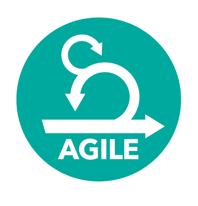
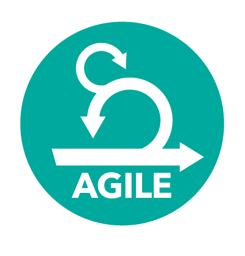

SUMMARY:
I am a driven, and passionate Web Developer working currently at SilverStripe, with a background in art and design. I am currently specialised in front end development, though I am comfortable in back end development(PHP/SilverStripe). I enjoy both leading and working within teams, as well as alone. Having the experience to both design and building products really excites me. Technology is the way of the future, my passion is visually creating meaning that interacts and connect with people. I enjoy being curious and pushing the boundaries of technology and design that have endless possibilities, but I also have an empathetic approach to problems. I often use empathy to explore the "why" and solve the "how". I love the continous advances in technology and seeing it create better ways to solving problems for the community. Right now, I am rebuilding a personal website, with technologies such as React, Pixi.js, Paper.Js, SilverStripe and (sass) Foundation. CLIENTS INVLOVED WITH AT SILVERSTRIPE:Meridian, Westpac, Careers, Forsyth Bar.
SKILLS:


 



SilverStripe October 2015 - Present
-
Developer
After being promoted from an intern to a junior I continued to work in a best spoke team. With clients such as Meridian and Forsyth Bar - Kiwi Saver website.
Promoted to an Intermediate from December 2016.
Currently(last 3 months)I have been contracted out by SilverStripe at Westpac, where I am working with Westpac's Credit Card forms, which is a large one page app in Backbone.js.
Technologies: Bootstrap, Foundation, Bourbon, SilverStripe, Mocha(JS testing)
Backbone, Marionette, JavaScript, Chart.Js, Cucumber(testing)
SilverStripe Intern July - October 2015
-
Developer
During the first 3 months at SilverStripe as an Intern. I worked as part of a best spoke team. I was invloved with the Meridian front end re-design.
Using technologies such as SilverStripe and Foundation(BEM sass).
I learnt the ins and outs of being a web developer and the importance of agile/working in teams. I also was selected for the PHP warm up conference lightening talks. Where I spoke about the intersection of technology and art.
KIDZONES
Out of School Care & Recreation
Facilitator, February 2011-
February 2013
During University I worked part time and full time during the holidays. I was responsible for up to 4 staff members and 30+ children in a busy enviroment.
My role became diverse when I was identified as being a team player, innovative, personable and self motivated.
-
Manager role gave oppurtunity to design the programme structure.
-
Implemented and facilatated new ideas and further developed positive relationships with children and parents.
-
This lead to the programmes growth from 10 to 40 + children in the holidays.
APN News and Media
Credit Control
-
July 2011
-
January 2012
left to study fulltime
Most of the work was stakeholder management. Building a close relationship with a portfolio of clients and being able to work out solution on their overdue accounts.
My ability to negotiate and empathise was paramount as was my ability to work efficiently to hit deadlines.
-
Highly measured, customer focussed and target driven enviroment which provided clear visibility of performance and how to improve.
-
Required detailed knowledge of finances, and understanding of company and customer needs to ensure targets were met of debt.
-
Consistently meeting targets and often exceeded expectations in relation to personal effort required.
-
Often working longer hours to ensure that all tasks were completed.
-
After being recognized for meeting targets I was given the responsibilty of looking after higher amounts of debt.
AWARDS/EXHIBITIONS:
2015
-
PHP SilverStripe warm up conference - lightening talk - The Intersection of Art and Technology
2015
-
Enspiral Dev Academy Diversity Scholarship
2014
-
ELAM
-
University of Auckland | Selected for private collection.
2014
-
Corban Estate
-
"Realism" Exhibition.
2014
-
Blood and Bone
-
"Design/Decorating" Illustrations for Hannah Whitehead.
2013/2014
-
James Wallace Arts Trust University Internship Program.
2012
-
Northland Community Arts Centre
-
Illustration Exhibition.
REFEREES:
On Request.
Technologies: Bootstrap, Foundation, Bourbon, SilverStripe, Mocha(JS testing) Backbone, Marionette, JavaScript, Chart.Js, Cucumber(testing)